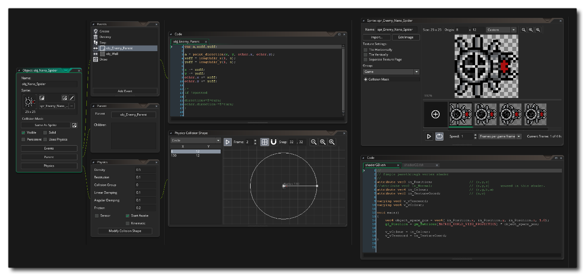

GameMaker Studio 2 es una herramienta diseñada para capacitarlo a usted y a su equipo para crear juegos nuevos e innovadores, así como prototipos de ideas de la manera más rápida e intuitiva posible en múltiples plataformas de destino. Está pensado principalmente como una herramienta para crear juegos 2D, aunque los juegos 3D son perfectamente realizables, y viene con varias herramientas y editores para ayudarlo a hacer realidad sus sueños e ideas, con su proyecto final siendo portado a través de múltiples plataformas desde la misma inicial recursos básicos

Para aquellos que son nuevos en el mundo de la programación o que nunca antes han usado ninguna herramienta de creación de juegos, GameMaker Studio 2 ofrece una interfaz de iconos de acción de arrastrar y soltar (DnD™) intuitiva y fácil de usar que te permite comenzar a crear tu propio juegos muy rápidamente usando scripting visual. Si usted es un programador con más experiencia, puede usar el lenguaje de escritura GML apropiado para crear sus juegos, o incluso puede combinar ambos y llamar a funciones GML con (y desde) acciones de DnD™, brindándole una gran flexibilidad cuando llega a la forma en que escribes cosas. Todo esto se presenta de manera intuitiva, con diferentes aspectos de su juego " encadenado " en el IDE para brindarle una representación única y muy visual del flujo de trabajo.
Descubrirá que el IDE también es increíblemente flexible y se puede personalizar según sus necesidades (si la configuración IDE predeterminada no cubre algo que necesita) mediante el uso del sistema Plugin. Sin embargo, GameMaker Studio 2 viene con varias herramientas potentes, como un Editor de imágenes completo para crear sus propios sprites y conjuntos de teselas que también importarán las imágenes que haya creado en cualquier editor externo, incluidas las animaciones esqueleto de Spine y SWF. formato de archivos de vectores. Una vez que tenga sus imágenes, es simplemente una cuestión de asignarlas a objetos en el Editor de objetos, agregar algún código o acciones de DnD™, y luego colocar instancias de estos objetos en una sala de juegos en el Editor de habitaciones. También hay herramientas adicionales para crear rutas, líneas de tiempo, sombreadores y mucho más.
Este archivo de ayuda te dirá todo lo que necesitas saber sobre GameMaker Studio 2 y cómo puedes crear tus propios juegos con él. Sin embargo, tenga en cuenta que incluso con un programa como GameMaker Studio 2, diseñar juegos de computadora no es completamente sencillo, ¡así que no haga clic aquí en "hacerme un MMORPG"! Tenga en cuenta también que hay muchos aspectos para hacer juegos y que todos son igualmente importantes: juego, gráficos, sonidos, interacción del usuario, etc. Pero, el aspecto más importante de todos, es la paciencia. Si bien GameMaker Studio 2 es una herramienta poderosa, no puede hacer todo por ti con solo tocar un botón, así que comienza con ejemplos simples y te darás cuenta de que no solo es divertido crear juegos, sino aprender a usar GameMaker Studio 2 para hacer ¡también es muy gratificante!
Para obtener más información, ejemplos, tutoriales, ideas y enlaces a foros útiles y otros sitios geniales, visite el sitio web de YoYo Games: